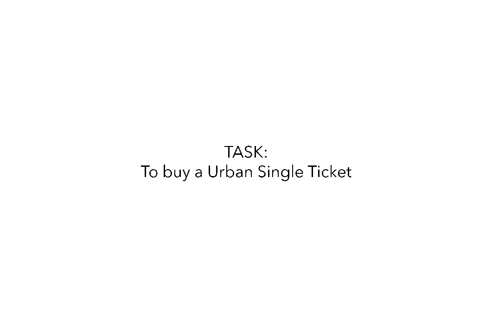
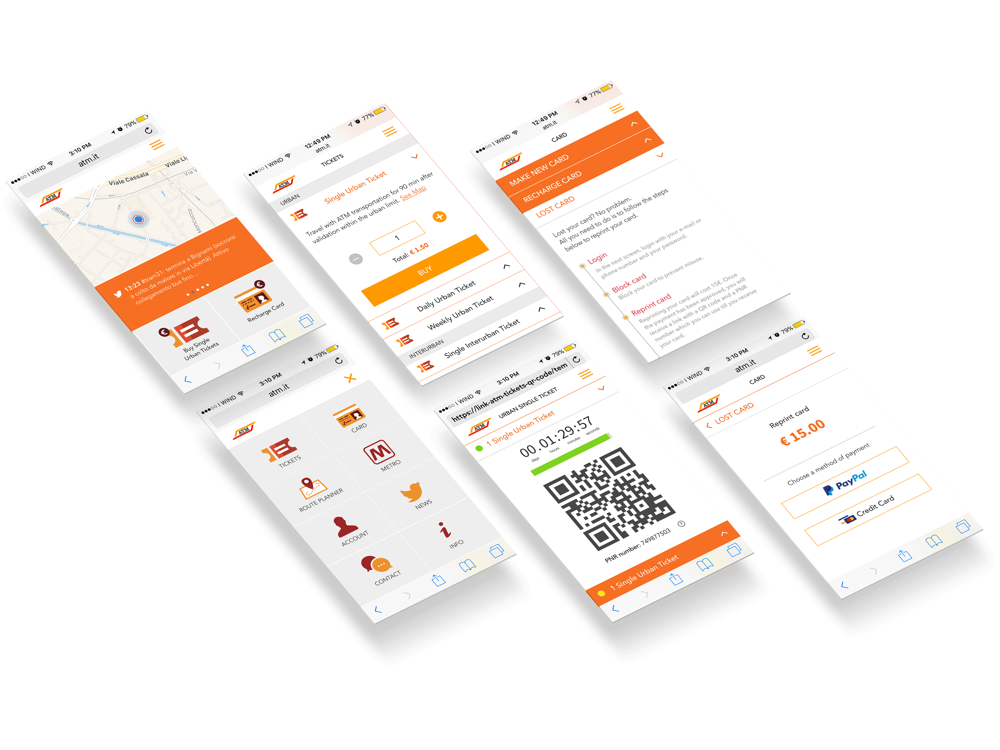

Brief
To review the user interface and experience of the ATM Kiosk and mobile app and enhance their usability.
My role: UX Designer, Team Leader
Size of team: 4 members
The Process
The approach to design was systematic and the process was iterative We took a very systematic approach to this project with multiple feedback cycles and iterations.

Research
The initial phase included 3 types of research:
- Observations
- Interviews
- Surveys
Key takeaways:
- Users were distributed almost evenly across the two channels of purchase - ATM kiosks and Buying in a Tabacchi.
- Lack of clear and accessible information induces cognitive stress.
- ATM kiosks and the app were perceived to be intimidating to new users; high level of errors.
Information Architecture
From the card sorting exercises conducted, a clear information architecture emerged.

Task Flows
The approach to design was systematic and the process was iterative

The approach to design was systematic and the process was iterative
Wireframes (Kiosk)
From the card sorting exercises conducted, a clear information architecture emerged.
Prototypes (Web App)
From the card sorting exercises conducted, a clear information architecture emerged.
From the card sorting exercises conducted, a clear information architecture emerged.
The Final Output
From the card sorting exercises conducted, a clear information architecture emerged.
